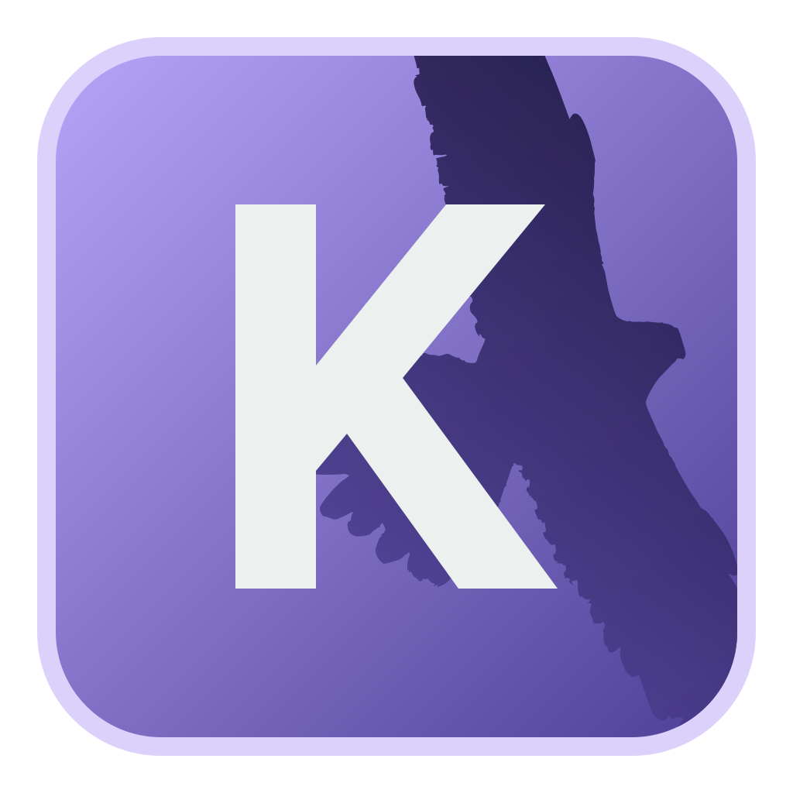

A small network
that plays proper chess.
Kestrel is a chess engine built around a neural network with about half a million parameters, trained on games and positions from Lichess. You can play it right here in your browser, or challenge it on Lichess, where it plays rated games against other bots.
if you enjoyed it, consider supporting me here! thank you so much for checking it out <3
About it
The page downloads about 3 MB in total: the network's weights and the engine that runs them. Once loaded, the network is squeezed down to 8-bit numbers.
Nobody told it what a good position looks like. It picked that up from millions of positions taken from real games, many with an engine's evaluation attached.
It searches a few moves deep, but only through the moves the network thinks are worth a look, plus any checks and captures along the way.
The same Rust engine runs on this page, behind the Lichess bot, and in a Docker container on my home server.
How it works
The position is turned into 21 layers of 8 by 8 squares, one for each kind of piece plus a few for things like castling rights. The network reads those and gives back a score for every legal move and a guess at whether the game is a win, draw or loss.
Rather than trying everything, the search follows the network's top few suggestions several moves deep and asks the network to judge where each line ends up.
The network runs on hand-written 8-bit maths tuned for different processors, including the browser's. On a desktop, judging a position takes about a fifth of a millisecond.
How strong is it
Better than you'd
expect for its size.
Kestrel plays rated games against other bots on Lichess most of the day. It beats most bots rated below about 2000, and still loses to the big engines, some of which are a hundred times its size.
Each change was tested by playing it against the previous version and by checking positions where Kestrel had gone wrong in real games. Only the changes that helped were kept.
Figures from November 2026. The live numbers are on its Lichess profile.